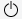
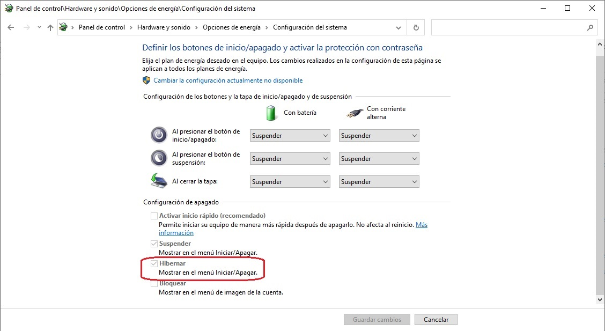

Cuando se deja de utilizar el ordenador, lo aconsejable es apagarlo para que no siga consumiendo recursos. Sin embargo, hay otras opciones que nos permiten ahorrar energía sin tener que apagarlo del todo.
Suspender
Seleccionar: Inicio >  > Suspender.
El PC entra en un modo de consumo de energía mínimo y el estado del sistema se guarda en la memoria RAM para poder volver a las ventanas y aplicaciones abiertas anteriormente. Esto permite que, al volver a la actividad, todo se encuentre tal cual lo dejamos.
La RAM es donde se almacenan de forma temporal los datos de los programas mientras estos se ejecutan. Cuando apagamos o reiniciamos el ordenador, esos datos se pierden.
El modo suspensión es una buena opción cuando vamos a tomarnos breves descansos y queremos retomar la actividad exactamente dónde lo habíamos dejado.
Por otro lado, es recomendable suspender el equipo en caso de que este esté conectado a la corriente eléctrica o se tenga la seguridad de que no se va a consumir la batería, porque si no se corre el riesgo de que se cierre todo bruscamente y afecte al ordenador de algún modo.
En caso de disponer de un portátil, estos entran automáticamente, por defecto, en suspensión cuando cerramos la tapa.
Apagar
Seleccionar: Inicio >  > Apagar. En ocasiones, podrá aparecer una opción adicional Actualizar y Apagar, si el equipo tiene pendiente alguna actualización.
> Apagar. En ocasiones, podrá aparecer una opción adicional Actualizar y Apagar, si el equipo tiene pendiente alguna actualización.
Cuando apagamos el equipo, este se cierra totalmente, lo que quiere decir que finalizan todas las tareas, programas y todo lo que estemos realizando. Por eso, si hemos dejado algo abierto antes, puede que nos pregunte si realmente queremos cerrarlo.
Es la opción idónea si no vamos a usar el ordenador durante un largo periodo de tiempo. Como al apagar, la RAM se limpia, es útil para solucionar de forma rápida cualquier problema de rendimiento debido a algún proceso en ejecución que esté ralentizando el equipo. Por eso, en muchos de los problemas que se dan con los ordenadores, una de las soluciones frecuentes es apagarlo y volver a encenderlo.
También encontramos la opción de Apagar al pulsar la combinación de teclas Windows + X o esta otra CTRL+ALT+SUPR.
Configuración adicional de energía
Para entrar en esta configuración: Inicio > Configuración > Sistema > Energía y suspensión > Configuración adicional de energía.
Aquí podemos elegir el comportamiento de los botones de encendido o de suspensión del teclado o, en el caso de un portátil, qué acción debe realizarse al bajar la tapa del mismo.
También nos permite activar la opción de Hibernar que, por defecto, no nos aparece en el menú de Inicio/Apagado. A veces viene deshabilitada (en gris) esta opción y no podemos marcarla o desmarcarla. En ese caso, hay que pulsar previamente en la parte de arriba, donde dice "Cambiar la configuración actualmente no disponible" (necesitaremos permisos de administrador, de ahí que aparezca el icono del escudo) y ya podremos configurarla.

En esta ventana también podemos configurar la función de Inicio rápido, marcada por defecto. El Inicio rápido está pensado para que cuando esté marcado el ordenador arranque más rápido, su funcionamiento es similar al método de Hibernar. Cuando está activada esta opción, al apagar el ordenador, se cierra la sesión y se finalizan todos los programas, con la diferencia de que los datos que hay en la RAM se guardan en el disco duro. Así, la próxima vez que encendamos el ordenador, esos datos se cargan y el sistema no tiene que arrancar desde cero, por lo tanto, tarda menos. La diferencia con Hibernar es que el Inicio rápido solo guarda y carga la parte del sistema operativo (kernel y controladores), pero no las aplicaciones abiertas.
Aunque parezca una contradicción, el Inicio rápido puede ocasionar a veces que nuestro ordenador vaya más lento. Esto puede ocurrir cuando, al encender el ordenador, se carga una versión antigua del kernel y de los controladores. Esta versión puede haber sido modificada o alterada, ser inestable y entrar en conflicto con las aplicaciones. La solución sería reiniciar el ordenador o desactivar el Inicio rápido.
Hibernar
Si hemos activado esta opción en Configuración Adicional de Energía, nos aparecerá en Inicio >  .
.
Cuando se hace clic en Hibernar, el estado actual del equipo se guarda en el disco duro para que se recupere al encender. Cuando volvemos a encender el sistema nuevamente, se cargarán los datos del disco duro en la RAM para que podamos reanudar la sesión donde lo dejamos.
Es recomendable hibernar el PC cuando se va a dejar de utilizar por un largo período de tiempo, pero se quiere conservar lo que se estaba haciendo para no tener que esperar a que este vuelva a encenderse.
Hay que tener en cuenta que hibernar, aunque pueda parecer similar, no es lo mismo que apagar o reiniciar por lo que no solucionará problemas de rendimiento. Tampoco es buena opción para hacer descansos breves de trabajo ya que el tiempo de arranque es más largo que el de suspensión.
Reiniciar
Inicio >  > Reiniciar.
> Reiniciar.
Al igual que sucede con el apagado, reiniciar vacía la memoria y detiene todas las tareas que se están ejecutando, incluidas aquellas que podrían haberlo ralentizado temporalmente. Igualmente puede solucionar problemas de conexión a Internet y del Bluetooth.